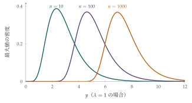

STEP III 2025、第11問
先に進む前に問題を読んでおこう。問題は、OCRが配布している2025年のSTEP問題一式（zipファイル）のSTEP IIIに収録されている： www.ocr.org.uk/Images/750486-2025-past-papers.zip
導入
次の百年で最大の洪水はどれほどの高さになるだろうか。千個の電球のうち最も長もちするものは、どれだけの時間もつだろうか。\(n\) 人が出場するマラソンで最も速い走者は、どれほど速いだろうか。多数の確率的な値のうち最大のものや最小のものといった極値（extremes）に関する問いは、工学、保険、気候科学できわめて重要であり、その振る舞いは平均とはまったく異なる。
この問題では、\(n\) 個の指数分布（exponential distribution）に従う寿命の最大値の分布を求める。その典型的な大きさは \(\ln n\) のように、ゆっくりとではあるが限りなく増大する。しかし、そのばらつきはまったく増大しない。千個の寿命の最大値は、おおよそ十個の寿命の最大値と同じ程度に予測可能なのである。極限において、その分布の形はガンベル分布（Gumbel distribution）となる。これは正規分布の曲線に対応する、極値版の分布である。
取りかかる前に
\(X_1, \ldots, X_n\) の最大値が \(y\) 以下になるのは、ちょうどどのようなときか。
\(Y \leq y\) となるのは、ちょうどすべての \(X_i \leq y\) となるときである。独立性（independence）により、これは積に変わる。
順を追って解く
段階 1 最大値の分布
各 \(X_i\) は \(y \geq 0\) に対して \(\mathrm{F}(y) = 1 - e^{-\lambda y}\) をみたし、独立性より \[\mathrm{G}(y) = \mathrm{P}(X_1 \leq y, \ldots, X_n \leq y) = \bigl(1 - e^{-\lambda y}\bigr)^n. \qed\]
段階 2 分位点
\(\mathrm{G}(L) = \alpha\) を \(L\) について解け。次に \(\mathrm{G}(U) = 1 - \alpha\) を解け。
\(\bigl(1 - e^{-\lambda L}\bigr)^n = \alpha\) から \(e^{-\lambda L} = 1 - \alpha^{1/n}\) が得られるので、 \[L(\alpha) = -\frac1\lambda\ln\bigl(1 - \alpha^{1/n}\bigr), \qquad U(\alpha) = -\frac1\lambda\ln\bigl(1 - (1 - \alpha)^{1/n}\bigr). \qed\]
段階 3 \(n\) が大きい場合
\(\alpha^{1/n} = e^{(\ln\alpha)/n}\) と書け。\(n\) が大きいとき、指数は小さい。\(1 - \alpha^{1/n}\) はおよそいくらか。
\(\alpha^{1/n} = e^{(\ln\alpha)/n} \approx 1 + \frac{\ln\alpha}{n}\) であるから、\(1 - \alpha^{1/n} \approx \frac{-\ln\alpha}{n} = \frac{\ln(1/\alpha)}{n}\) となる。したがって \[\lambda L(\alpha) \approx -\ln\frac{\ln(1/\alpha)}{n} = \ln n - \ln\Bigl(\ln\frac1\alpha\Bigr). \qed\] 同様に、\(\lambda U(\alpha) \approx \ln n - \ln\bigl(\ln\frac{1}{1 - \alpha}\bigr)\) である。
段階 4 増大とばらつき
中央値（median）は \(L(\frac12)\) であり、\(\lambda L(\frac12) \approx \ln n - \ln\ln2 \to \infty\) となる。しかし \[\lambda\bigl(U(\alpha) - L(\alpha)\bigr) \approx \ln\Bigl(\ln\frac1\alpha\Bigr) - \ln\Bigl(\ln\frac{1}{1 - \alpha}\Bigr),\] となり、\(\ln n\) の項は打ち消し合っている。つまり、幅は \(n\) によらない。■
段階 5 \(90\%\) 区間
\(\alpha = 0.05\) とせよ。\(\ln\frac1\alpha = \ln 20\) と \(\ln\frac{1}{0.95}\) はおよそいくらか。
\(\alpha = 0.05\) のとき \(\ln20 \approx 3\) であるから、\(\ln\ln\frac1\alpha \approx \ln3\) である。また \(\ln\frac{1}{0.95} = -\ln(1 - 0.05) \approx 0.05 = \frac{1}{20}\) であるから、\(\ln\ln\frac{1}{1 - \alpha} \approx \ln\frac{1}{20} \approx -3\) である。したがって幅はおよそ \(\frac1\lambda(\ln3 + 3) \approx \frac{4.1}{\lambda}\) であり、\(Y\) は確率 \(0.9\) で、幅およそ \(4\lambda^{-1}\) の区間 \([L(0.05), U(0.05)]\) に入る。■

振り返り
最大値が \(y\) 以下であるのは、すべてがそうであるとき。独立性によって、最大値の分布はべき乗になった。
逆に解いて分位点を求める。\(\mathrm{G}(y) = \alpha\) を解くことで、区間の端点の厳密な式が得られた。
近似してから比較する。\(L\) と \(U\) の近似はどちらも \(\ln n\) を含み、それが幅では打ち消し合った。
背後にある数学
ガンベル分布
\(\mathrm{P}(\lambda Y - \ln n \leq x) = \bigl(1 - \frac{e^{-x}}{n}\bigr)^n \to \exp(-e^{-x})\) であるから、ずらした最大値 \(\lambda Y - \ln n\) は、極限において分布関数（distribution function）\(\exp(-e^{-x})\) をもつガンベル分布に従う。その平均はオイラー（Euler）の定数 \(\gamma \approx 0.577\) である。この分布にはすでに出会っている。\(n\) 種類すべてのクーポンを集めるまでの時間（第 9.11 節）は、\(n\) 個の（ほぼ独立な）待ち時間の最大値であり、それがおよそ \(n\ln n + \gamma n\) となり、\(n\) のオーダーのガンベル型のゆらぎをもつのはこのためである。
極値理論
フィッシャー（Fisher）、ティペット（Tippett）、グネジェンコ（Gnedenko）による注目すべき定理（1928–1943）によれば、独立同分布な多数の確率変数の最大値は、適切にずらし尺度を変えると、極限において3通りの形しかとりえない。すなわち、ガンベル型（指数分布や正規分布のような軽い裾（tail）をもつ場合）、フレシェ（Fréchet）型（コーシー（Cauchy）分布のような重い裾をもつ場合）、ワイブル（Weibull）型（明確な上限をもつ変数の場合）である。これは中心極限定理（central limit theorem）（第 12.24 節）の極値版にあたる。技術者はこれを用いて「百年に一度の波」に耐える防潮施設や海洋プラットフォームを設計し、保険会社は巨大災害補償の価格を決め、気候科学者は熱波がどのように変化しているかを推定する。
エミール・ユリウス・ガンベル（Emil Julius Gumbel）はドイツの統計学者であり、ナチスに公然と反対したために1932年に大学の職を追われ、最終的にアメリカ合衆国へ亡命した人物である。彼は1930年代から1940年代にかけて、極値理論を河川の氾濫に応用した。その著書 Statistics of Extremes（『極値統計学』、1958年）によって、この分野は実用的な道具となった。1953年の北海大洪水の後にオランダを守るために建設されたデルタ計画の施設は、極値統計を用いて、およそ \(10\,000\) 年に一度と見込まれる高潮に耐えるよう設計された。
思考のスキル
独立な確率変数の最大値については \(\mathrm{P}(\max \leq y) = \prod\mathrm{P}(X_i \leq y)\)、最小値については \(\mathrm{P}(\min > y) = \prod\mathrm{P}(X_i > y)\) である。
この一つの考え方で、最寄りのスーパーマーケット（第 12.19 節）、最初に来るバス（第 12.18 節）、最も長もちする電球を扱うことができる。大学では、これが順序統計量（order statistics）と極値理論（extreme value theory）の出発点となる。
次の一歩
最大値の期待値。\(\mathrm{E}(Y) = \frac1\lambda\bigl(1 + \frac12 + \cdots + \frac1n\bigr)\) を示せ。（ヒント：無記憶性（memorylessness）により、\(n\) 個の寿命のうち最初の一つが尽きた後、残りの \(n - 1\) 個は新たに始まったのと同じである。）
最小値。\(X_1, \ldots, X_n\) の最小値が、パラメータ \(n\lambda\) の指数分布に従うことを示せ。
中央値を厳密に。\(Y\) の厳密な中央値を求め、\(n = 10\) の場合について近似値 \(\frac1\lambda(\ln n - \ln\ln2)\) と比較せよ。
一様分布の最大値。\(X_1, \ldots, X_n\) が \([0, 1]\) 上の一様分布（uniform distribution）に従うとき、その最大値 \(M\) の分布を求め、\(n\) が大きいとき \(n(1 - M)\) が近似的に指数分布に従うことを示せ。これは極値の3つの形のうちどれか。
さらに学ぶために
Stuart Coles, An Introduction to Statistical Modeling of Extreme Values（Springer）。洪水や海面水位の実データを用いた標準的な入門書。
Emil Julius Gumbel, Statistics of Extremes（Dover）。古典的名著。
David Spiegelhalter, The Art of Uncertainty（Pelican）。まれな事象と、それについてどう考えるべきかを論じた本。